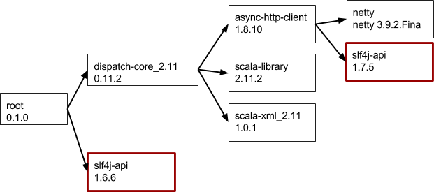

Domaines fonctionnels
Note
il s’agit des fonctions utilisées par les clients dans le cadre de l’usine logicielle. Pour mettre en oeuvre un sujet de manière adaptée à son organisation, le client va utiliser des outils (allant du papier/crayon jusqu’au Robot intelligent en passant par Excel/LibreOffice).
Les Conventions
Les conventions sont les règles définies arbitrairement qui permettent à tous les développeurs d’écrire un code homogène. On peut découper les conventions en deux catégories :
Elles ont toutes pour objectif de rendre le code source plus facile à lire et à comprendre avec moins d’efforts et donc d’améliorer sa maintenabilité.
En cas d’absence de convention, une entreprise s’expose à :
- La difficulté pour intégrer de nouveaux éléments au sein de l’équipe ;
- Des incompréhensions et des conflits entre les développeurs.
Exemples :
Les Métiers impliqués : Développeur.
La Modélisation
La modélisation permet de répondre aux questions suivantes :
- Quels sont les fonctionnalités de mon futur produit ?
- Quelle sera son architecture ?
- Comment celui-ci sera-t-il déployé ?
- Comment les différents modules de mes applications vont-ils communiquer ensemble ?
- Quel est le flot d’exécution d’une fonctionnalité ?
- Que vont contenir mes modules ?
- Etc.
Pour ne pas partir à l’aveugle, i.e. pour savoir à l’avance exactement ce dont il est nécessaire d’écrire pour développer l’application, il est intéressant d’utiliser des outils de modélisation.
La norme UML2 est un langage de modélisation qui est le plus utilisé de nos jours. UML est utilisé pour spécifier, visualiser, modifier et construire les documents nécessaires au bon développement d’un logiciel orienté objet. UML offre un standard de modélisation, pour représenter l’architecture logicielle.
Les différents éléments représentables sont :
- activité d’un objet/logiciel,
- acteurs,
- processus,
- schéma de base de données,
- composants logiciels,
- réutilisation de composants.
Grâce à certains outils de modélisation UML, il est également possible de générer automatiquement une partie de code, par exemple en langage Java à partir des divers documents réalisés.
Exemple d’outils Open source :
Exemple d’outil Propriétaire : Rational Rose (http://www-03.ibm.com/software/products/fr/enterprise )
Les Métiers impliqués : Développeur, Responsable produit.
La Gestion de version
Un gestionnaire de version permet de stocker l’ensemble des sources en conservant la chronologie de toutes les modifications qui ont été effectuées dessus. Par extension, il permet à tous les développeurs de mutualiser leurs travaux sans interférence.
En cas d’absence de système de gestion de version, une entreprise s’expose à :
- des développeurs qui n’ont pas de moyen de savoir ce que les autres font ;
- des erreurs difficiles à identifier et à corriger ;
- le risque de perdre les modifications qui ne sont stockées que sur les postes des développeurs.
Exemples d’outils Open source :
Exemple d’outil Propriétaire : ClearCase (http://www-03.ibm.com/software/products/fr/clearcase)
Son Rôle dans l’intégration continue : Mise à disposition des sources.
Son Rôle dans la livraison continue : Via le système de branches, il permet la création et l’entretien d’une branche qui contient en permanence des sources qui passeront avec succès l’ensemble des tests.
Les Métiers impliqués : Développeur, Responsable produit.
Le Suivi des demandes
Un outil de suivi de demandes permet à tous (du développeur à l’utilisateur) de soumettre un bogue ou une demande d’assistance ou d’évolution. Il répond à un besoin de centralisation des demandes autour d’un produit que cela soit anomalie, défaut, bug, évolution.
En cas d’absence d’outil de suivi de demandes, une entreprise s’expose à :
- Oublier des demandes (bogues ou nouvelles fonctionnalités) ;
- Manquer de visibilité sur l’activité des développeurs ;
- Livrer un code de mauvaise qualité.
Exemples d’outils Open source :
Exemple d’outil Propriétaire : Jira (https://www.atlassian.com/software/jira)
Son Rôle dans la livraison continue : il permet de fournir l’ensemble des nouveautés contenues dans une nouvelle version du logiciel (i.e. Changelog ou Release Note).
Les Métiers impliqués : Développeur, Intégrateur, Responsable produit, Utilisateur.
La Revue de code
L’outil de revue de code permet un examen systématique du code source du logiciel.
Le principe de la revue de code effectuée par ses pairs est qu’un autre membre de l’équipe de développement relise le code produit par un développeur afin de corriger et d’améliorer au maximum le code écrit. Cela permet, en sus, d’uniformiser le niveau de connaissance au sein de l’équipe.
En cas d’absence de revue de code, une entreprise s’expose à :
- avoir un code moins optimisé ;
- passer à côté des défauts simples ;
- avoir une moins bonne connaissance générale du code au sein de son équipe.
Exemples d’outils Open source :
Exemple d’outil Propriétaire : Stash (https://www.atlassian.com/software/stash)
L’Interconnexion : Il utilise les capacités du gestionnaire de version afin de ne donner au vérificateur que les modifications fournies pour chaque commit de développeur.
Son Rôle dans l’intégration continue permet de trouver par anticipation des bogues ou des vulnérabilités potentielles ou de corriger des erreurs de conception afin d’améliorer la qualité et la sécurité du logiciel.
Les Métiers impliqués : Développeurs, Responsable produit.
La Forge logicielle
Une forge logicielle est un système de gestion de développement collaboratif. Elle est la réunion de plusieurs outils, dont principalement les suivants :
- Un afficheur du gestionnaire des versions ;
- Un gestionnaire de listes de discussions (et/ou de forums) ;
- Un outil de suivi des demandes ;
- Un gestionnaire de documentation (souvent sur le principe du wiki).
C’est généralement, l’interface principale entre les utilisateurs et l’éditeur logiciel.
En cas d’absence de forge logicielle, une entreprise s’expose aux risques inhérents à chacun des outils comme cités précédemment.
Exemples d’outils Open source :
Exemples d’outils Propriétaires :
L’Interconnexion : La forge logicielle permet de mettre en cohérence facilement le gestionnaire de version et l’outil de suivi des demandes. Par exemple, via une notation dans le commentaire d’un commit, il est possible de lier ce dernier à une demande.
Les Métiers impliqués : Développeur, Intégrateur, Responsable produit, Utilisateur.
La Qualimétrie
Les outils de qualimétrie servent à :
- Mesurer la qualité de code ;
- Mesurer la couverture de tests ;
- Publier des rapports sur les différents indicateurs obtenus ;
- Vérifier que certains critères importants de l’application soient toujours vérifié ou non tels que :
- la performance,
- la maintenabilité,
- la fiabilité,
- l’évolutivité,
- la testabilité,
- la sécurité,
- etc.
En cas d’absence d’outil de qualimétrie, une entreprise s’expose à :
- Ne pas pouvoir justifier de la qualité de son code ;
- Manquer de visibilité sur la qualité de son produit.
Exemples d’outils Open source :
Exemples d’outils Propriétaire : Kiuwan (https://www.kiuwan.com/)
Son Rôle dans l’intégration continue : assure que le code source est produit selon des normes établies pour les critères suivants :
- réglementation,
- performance,
- sécurité,
- maintenabilité.
Les Métiers impliqués : Développeur, Responsable produit.
Les Tests internes automatisés
Afin que chaque développement soit fiable et corresponde aux attentes, il est nécessaire d’effectuer des tests. Intuitivement, il est tentant de tester manuellement en exécutant l’application. Mais cette méthodologie nous montre rapidement ces limites. En effet, que faire si :
- L’application n’est pas exécutable au moment du test ? Ce qui peut être un état courant pendant le développement de l’application. Dans ce cas, dois-je attendre et risquer de continuer mon développement sur un code non fiable ?
- Si un test est passé la semaine dernière, a-t-on l’assurance qu’il passe toujours aujourd’hui ?
- Lorsqu’un code existant est modifié, comment peut-on s’assurer que des régressions n’ont pas été créées ? dois-le lancer tous les tests ? une partie ? connaît-on tous les tests à lancer ?
Automatiser les tests, c’est-à-dire, créer des tests qui peuvent tous être lancés facilement et qui se valident eux-mêmes est une solution qui devient très vite indispensable pour garantir la fiabilité du produit.
En cas d’absence de tests unitaires, une entreprise s’expose à :
- Des régressions dans le code ;
- D’oublier des cas lors du développement d’une fonctionnalité ;
- De développer des fonctionnalités qui ne produisent pas le résultat attendu.
Exemples d’outils Open source :
Exemples d’outils Propriétaire : Parasoft C/C++test (http://www.parasoft.com/product/cpptest)
L’Interconnexion : Il délivre ses résultats à l’outil de qualimétrie.
Son Rôle dans l’intégration continue : Les tests permettent de valider la cohérence au cours du temps des entrées et des sorties de chaque fonction ou méthode.
Les Métiers impliqués : Développeur, Intégrateur.
La Gestion des bibliothèques
Tout développement conséquent nécessite l’utilisation de fonctionnalités existantes. Il faut donc inclure ces bibliothèques dans notre projet. L’inclusion de ces bibliothèques (appelée aussi dépendance de l’application), n’est pas triviale. En effet, une dépendance peut se caractériser par :
- Son numéro de version,
- Et ces propres dépendances (appelées dépendances transitives). Chacune de ces dépendances transitives ayant une version et ces propres dépendances, ceci peut vite devenir complexe.
Schématisation des dépendances d’un programme
Une application peut avoir rapidement un graphe de dépendance complexe comme par exemple le schéma ci-dessus. Télécharger manuellement toutes ces dépandances à la bonne version sans en oublier une seule seule peut vite devenir une tâche hardue.
Pour celà, il devient vite indispensable d’avoir un gestionnaire de dépendances avancé qui pourra automatiquement télécharger chacune de ces dépandances à la version demandée.
Un autre problème courant que les gestionnaires de dépendances ne résolvent pas forcément correctèment est le «conflit de dépendance», ou «comment faire si dans mon graphe de dépendances se trouve une bibliothèque présente plusieurs fois mais à des version différentes» ?

Représentation d’une même dépendance nécessaire dans deux versions différentes
Le plus souvent, il est nécessaire de résoudre ces conflits au cas par cas ce qui nécessite de bien connaitre les différentes bibliothèques utilisées.
Pour aller plus loin, il est possible d’harmoniser l’ensembles des technologies (et leur version) au saint de l’entreprise. Ceci à pour avantage de limiter les connaissances à avoir, de faciliter le passage de connaissances et de limiter le risque de conflits de versions.
Exemples d’outils Open source :
L’Interconnexion : peut être utilisé par le moteur de production
Les Métiers impliqués : Développeur, Architecte logiciel
Le Paramétrage de l’application
Le paramétrage d’une application permet que celle-ci soit la plus flexible par rapport aux besoins d’utilisateurs.
Mais laisser un paramétrage trop important à l’utilisateur n’est pas sans inconvénients. En effet ceci à pour conséquence de :
- Devoir documenter chacun des paramètres (Leurs impacts, ainsi que leurs interactions) ;
- Devenir trop complexe pour l’utilisateur qui éprouvera donc des difficultés à correctement configurer l’application ;
- S’exposer à la saisie de valeurs incorrectes de l’utilisateur. Il faut donc vérifier scrupuleusement chacune des valeurs des paramètres saisis. Ceci à des conséquences sur la complexité des développements, et sur la fiabilité de l’application.
À l’inverse, ne pas laisser assez de paramétrage entraine la possibilité que l’application ne corresponde pas à tous les clients.
Il faut donc choisir consciencieusement quand on doit associer une valeur à un paramètre. Ce choix peut être fait aux étapes suivantes :
- À la compilation :
Les paramètres sont soit écrits «en statique» soit par le biais de fichiers de configuration.
- À l’empaquetage :
Il est possible que le besoin soit de produire plusieurs type de packages exécutables pour cette application. Assigner un paramétrage différent pour chacun de ces packages peut être intéressant. C’est la personne ou le programme en charge de ces paramètres qui gère l’assignation des valeurs à chacun des paramètres assignés.
- Au déploiement :
D’autres paramètres peuvent être assignés au moment de processus de déploiement sur la machine cible. Le paramétrage concerné est donc spécifique à la machine. Celui-ci est souvent enregistré dans des fichiers présents sur la machine cible. Il est donc possible que le client modifie ceux-ci. C’est la personne ou programme en charge du déploiement qui se charge des assignations.
- À l’exécution :
Les paramètres de l’application sont assignables ou modifiable pendant l’exécution de l’application. Ceci-se fait le plus souvent via une interface graphique. Les données provenant de l’utilisateur, il faut vérifier scrupuleusement les données saisies.
Pour chaque paramètre de l’application il faut donc se poser la question : qui cela concerne il ?
- Toutes les versions de mes produits ?
- Un packaging en particulier ?
- Une machine cible ?
- Un utilisateur ?
Les Métiers impliqués : Développeur, Intégrateur.
Le Moteur de production
Le moteur de production permet d’automatiser l’ensemble des actions suivantes :
- préprocessing,
- compilation,
- éditions des liens,
- etc.
L’utilisation d’un moteur de production multiplateforme permet la génération de fichiers de construction pour tous les environnements cibles.
En cas d’absence de moteur de production, une entreprise s’expose à :
- Perdre du temps dans des tâches rébarbatives ;
- Faire des erreurs évitables facilement.
Exemples d’outils Open source :
Exemple d’outils Propriétaire : Team Foundation Server (https://msdn.microsoft.com/fr-fr/vstudio/ff637362.aspx)
Son Rôle dans l’intégration continue : permet la fourniture de binaires exploitables pour l’ensemble des environnements cibles.
Les Métiers impliqués : Développeurs, Intégrateurs.
L’IDE
L’IDE (pour Integrated Development Environment) ou en français environnement de développement intégré est un ensemble d’outils comportant notamment :
- Un éditeur de texte avec des facilités pour la programmation (auto-complétion, formatage automatique, etc.) ;
- Un outil d’analyse du code source ;
- Un moteur de recherche ;
- La possibilité de déclencher le compilateur et/ou l’éditeur de liens ;
- Un débogueur en ligne.
C’est généralement l’interface principale du développeur.
La présence d’un IDE unifié permet en outre de :
- Soulager le développeur de certaines tâches rébarbatives ;
- Mettre à disposition du développeur tous les outils afin de réaliser l’ensemble des tâches demandées par le service (formatage, tests unitaires, compilation, etc.) ;
- Paramétrer un projet pour qu’il soit exploitable directement dans l’IDE ce qui rend l’arrivée d’un nouveau développeur simple et rapide.
Exemples d’outils Open source :
Exemple d’outil Propriétaire : Visual Studio (https://www.visualstudio.com)
L’Interconnexion : L’IDE exploite toutes les fonctionnalités du gestionnaire de version. Il peut être connecté avec l’outil de suivi de demande afin que le développeur puisse mettre à jour via son IDE les demandes au fur et à mesure de ses développements. Enfin, une intégration des tests unitaires est souhaitable pour aider le développeur à les réaliser.
Les Métiers impliqués : Développeur.
L’Empaquetage
L’outil d’empaquetage crée un paquet contenant l’ensemble des exécutables, fichiers de configuration et ressources constituant le logiciel.
A l’instar du moteur de production, un outil d’empaquetage multiplateforme permet la génération de paquets pour tous les environnements cibles.
En cas d’absence d’empaquetage, une entreprise s’expose à :
- Mal maîtriser l’installation de son produit sur l’environnement cible ;
- Perdre du temps avant chaque test du système ;
- Imposer un stress supplémentaire à ses équipes.
Exemples d’outils Open source :
Exemple d’outil Propriétaire : Visual Studio (https://www.visualstudio.com)
Son Rôle dans la livraison continue : permet la fourniture de paquets installables pour l’ensemble des environnements cibles.
Les Métiers impliqués : Intégrateur.
Les Tests du système
Un test système est une procédure permettant de vérifier la bonne implémentation des spécifications logicielles. En général, les tests systèmes se font sur une application en cours d’exécution.
Toutes les spécifications du logiciel doivent être testées.
On peut découper les tests en plusieurs parties :
- Les tests fonctionnels ;
- Les tests de performance ;
- Les tests de robustesse ;
- Les tests de vulnérabilité.
En cas d’absence de tests du système, une entreprise s’expose à :
- Des régressions ;
- Des surcoûts liés à la maintenance curative des produits livrés ;
- Des performances conditions réelles en deçà de ce qui est attendu.
Pour les même raisons que celles citées dans Les Tests internes automatisés, Il est fortement conseillé d’automatiser tous les tests qui sont automatisables.
Exemple d’outil Open source : Bats (https://github.com/sstephenson/bats)
Exemple d’outil Propriétaire : Visual Studio (https://www.visualstudio.com)
L’Interconnexion : Il délivre ses résultats à l’outil de qualimétrie.
Son Rôle dans l’intégration continue : les tests du système permettent de valider le respect des spécifications au cours du temps. Ils permettent notamment d’éviter les régressions.
Les Métiers impliqués : Intégrateur.
Le Serveur d’intégration continue
Le serveur d’intégration continue est l’orchestrateur de l’ensemble des tâches automatisables au court du processus de développement.
En cas d’absence de serveur d’intégration continue, une entreprise s’expose à :
- Ne pas savoir si les dernières compilations de chaque branche se sont correctement déroulées ;
- Perdre du temps en actions rébarbatives pour chaque livraison ;
- Ne pas être en mesure de tester chaque version à la demande ;
- Ne pas automatiser l’ensemble des tâches décrites en amont de ce document.
Exemple d’outil Open source :
Exemple d’outil Propriétaire : Bamboo (https://www.atlassian.com/software/bamboo)
L’Interconnexion : Pour chaque environnement :
- Récupération des sources via le gestionnaire de version ;
- Déroulement des tests unitaires ;
- Compilation via le moteur de production ;
- Empaquetage ;
- Livraison sur un gestionnaire d’archives ;
- Démarrage de l’environnement de tests via l’hyperviseur ;
- Déploiement du logiciel via le gestionnaire de configuration ;
- Déroulement des tests fonctionnels ;
- Déroulement des tests de performances ;
- Rapatriement et affichage des résultats via l’outil de qualimétrie.
Son Rôle dans l’intégration continue : Orchestrateur.
Son Rôle dans la livraison continue : Validateur de la capacité de déploiement d’une nouvelle version.
Son Rôle dans le déploiement continu : Ordonnateur du déploiement.
Les Métiers impliqués : Intégrateur.
Le processus de release
Une release est une version figée du produit destinée à l’utilisation par vos clients.
Une release doit donc être :
- fiable,
- correspondre aux demandes du client,
- parfaitement identifiée (un numéro de version unique).
Afin de s’assurer que la release correspond à tous les critères exigés, on met en place un processus en plusieurs étapes successives. Une release est produite si et seulement toutes ces étapes se sont déroulées avec succès.
Exemple de processus :
- Exécution de tests internes (unitaires, intégrations, fonctionnels, etc.)
- Exécutions des tests systèmes (stress tests, sécurité, etc.)
- Création d’une branche stable de distribution (voir chapitre Gestion de source)
- Création d’un tag dans le gestionnaire de source
- Empaquetage de l’application
- Déploiement dans un environnement de recette
- Exécution des tests de recette à partir d’une checklist validant la version.
- Mise en place de la release dans son environnement de production.
On remarque que si la totalité des tests internes et systèmes sont automatisés, mise à part l’étape 7 qui est souvent manuelle, toutes les autres sont automatisable. Le serveur d’intégration continue pourrait par exemples lancer le processus de release.
Différents niveaux de release :
Il est possible d’avoir plusieurs niveaux de release (alpha - beta - RC1 - ... - RCn - Version finale).
Chacune de ces versions sont testées dans des conditions réelles par des utilisateurs ne faisant pas forcément parti de l’entreprise. Voici comment chacune de ces versions sont généralement utilisées :
- Les versions alpha sont généralement testées en interne dans l’entreprise.
- Les versions beta sont utilisées par un nombre réduit d’utilisateur externe appelé beta-testeur.
- Les versions release candidate (RCn) sont testées par un nombre d’utilisateur plus conséquent. Le nombre de release candidate dépend des remontées utilisateur. Tant qu’une release candidate ne répond pas aux exigences, une nouvelle release candidate est produite avec de nouveaux correctifs.
Entre chaque niveau de release, uniquement des correctifs sont apportés.
L’Interconnexion : pour chaque environnement
- Récupération des sources via le gestionnaire de version ;
- Déroulement des tests internes ;
- Compilation via le moteur de production ;
- Empaquetage ;
- Démarrage de l’environnement de tests via l’hyperviseur ;
- Déroulement des tests fonctionnels ;
- Déroulement des tests systèmes ;
- Rapatriement et affichage des résultats via l’outil de qualimétrie.
Son Rôle dans la livraison continue : Validateur une version donné d’un produit pour une mise en production
Les Métiers impliqués : Intégrateur.
Le Tableau de bord
Interface affichant des indicateurs récupérés au sein de l’ensemble des composants de l’usine logicielle.
Le tableau de bord permet d’avoir une vision claire et évolutive de l’état de son service de développement logiciel. Il permet d’établir un référentiel servant de base à la prise de décisions telles que l’attribution des ressources, la création de tests supplémentaires, etc..
En cas d’absence de tableau de bord, une entreprise s’expose à :
- Manquer de vision sur les problématiques en cours ;
- Mesurer difficilement l’impact des prises de décision ;
- Une dispersion des indicateurs présents au sein de chaque outil.
Exemple d’outil Open source : Freeboard (https://github.com/Freeboard/freeboard)
Exemple d’outil propriétaire : Komea Dashboard (http://www.tocea.fr/solutions/#dashboard)
L’Interconnexion : rassemble toutes les métriques données par l’ensemble des outils de l’usine logicielle.
Son Rôle dans l’intégration continue : permet de suivre l’évolution des pratiques de développement.
Son Rôle dans la livraison continue : permet de suivre l’évolution des livraisons.
Son Rôle dans le déploiement continu : permet de suivre l’évolution des déploiements.
Les Métiers impliqués : Développeur, Intégrateur, Responsable produit, Support.
La Documentation
La documentation d’un projet logiciel doit être vue sous plusieurs angles :
- La documentation des sources
- commente les sources du logiciel (i.e. variables, fonctions, classes, méthodes, etc.),
- peut contenir des exemples d’exploitation des classes, méthodes, etc.
- est à destination des développeurs.
- La documentation technique
- contient l’architecture métier/fonctionnelle,
- contient l’architecture applicative,
- contient le schéma d’exploitation,
- contient les informations d’installation et de mise à jour,
- contient les informations de paramétrage.
- La documentation d’administration
- est le manuel complet d’administration du logiciel,
- peut contenir des tutoriels pour faciliter l’appréhension de l’administration du logiciel,
- est à destination des administrateurs systèmes du logiciel.
- La documentation utilisateur
- est le manuel complet d’utilisation du logiciel,
- peut contenir des tutoriels pour faciliter l’appréhension de l’utilisation du logiciel,
- peut contenir une FAQ,
- est à destination des utilisateurs du logiciel
En cas d’absence de documentation, une entreprise s’expose à :
- Faire de son produit un outil interne et pas réellement un produit ;
- Ne pas pouvoir satisfaire la demande d’un client ;
- Oublier des informations ;
- Perdre du temps / des informations vis-à-vis d’un homme-clé ;
- Perdre du temps / des informations lors d’intégration de nouveaux développeurs..
Exemple d’outils Open source :
Exemple d’outil propriétaire : Jira (https://www.atlassian.com/software/jira)
Les Métiers impliqués : Développeur, Intégrateur, Responsable produit, Support.
Les Métiers impliqués : Développeur, Intégrateur, Responsable produit, Support.
Tableau récapitulatif
| Feature |
Fonction |
Objets concernés |
|---|
| Les Conventions |
Normaliser |
Programmes |
| La Modélisation |
Concevoir |
Application |
| La Gestion de version |
Archiver |
Programmes |
| Le Suivi des demandes |
Gérer |
Features |
| La Revue de code |
Relire |
Programmes |
| La Forge logicielle |
Développer(?) |
Programmes |
| La Qualimétrie |
Fiabiliser |
Programmes |
| Les Tests internes automatisés |
Valider |
Programmes |
| La Gestion des bibliothèques |
Construire |
Application |
| Le Paramétrage de l’application |
Déploier |
Release |
| Le Moteur de production |
Construire |
Release |
| L’IDE |
Développer |
|
| L’Empaquetage |
Délivrer |
|
| Les Tests du système |
Valider |
|
| L’intégration continue |
Orchestrer |
|
| Le processus de release |
Délivrer |
|
| Le Tableau de bord |
Piloter |
|
| La Documentation |
Développer |
|
| Single Sign On(*) |
Authentifier |
Utilisateurs |
(*) voir Caractéristiques